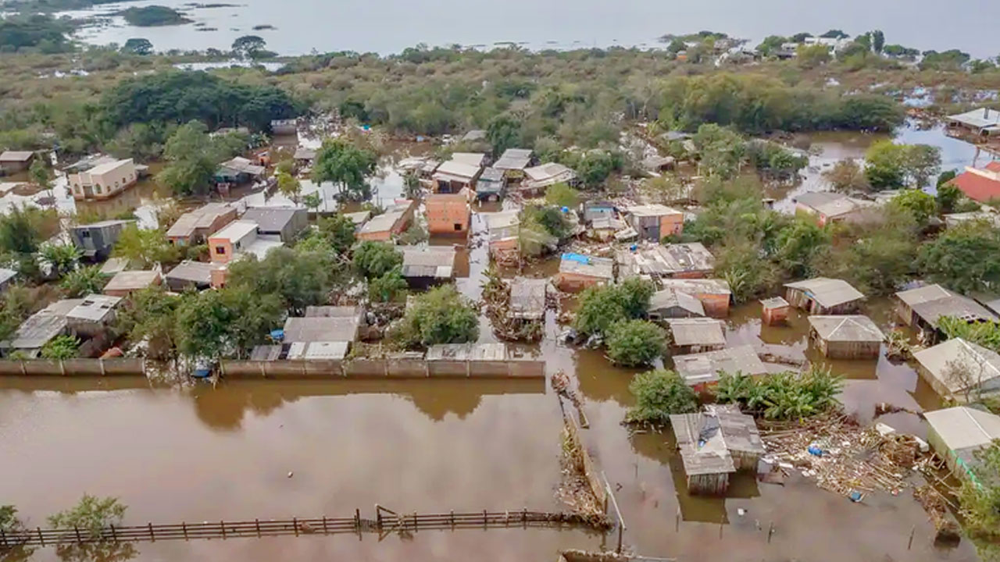

Estigma como processo social
- Compreender o conceito de estigma, sua aplicação e implicação no acesso dos Povos Ciganos aos serviços de saúde.
- Analisar os estigmas relacionados aos Povos Ciganos no cuidado com a saúde, debatendo suas causas e consequências.
- Propor estratégias para superar os estigmas que afetam os Povos Ciganos, promovendo um cuidado efetivo e compreensivo com a saúde.
Autoria: Roi Rogeres Fernandes Filho
Levantando as tendas: introdução
Levantando as tendas em alinhamento com Monteiro & Vilela (2013), o estigma é uma marca corporal ou social, que confere valor negativo à pessoa-alvo, povo, grupo, ou segmento, sendo um poderoso e nocivo mecanismo de exclusão social, cuja eficácia repousa na crença de que uma determinada característica, física ou comportamental, cultural ou tradicional, define o caráter moral e/ou social do seu portador ou portadora.
“Com isso, pessoas possuidoras dessas marcas são estigmatizadas e acabam sendo alijadas do acesso a bens materiais e simbólicos da sociedade, incluindo a saúde”.

O termo “estigma” tem origem na Grécia, e remonta à prática antiga do país, de marcar o corpo de escravizados, criminosos e prisioneiros de guerra, assinalando a sua condição de dominados e excluindo-os da participação na Polis (espaços em que eram estabelecidas as regras para o convívio social e político de seus habitantes).
O estigma, sinal visível, identificava aqueles que não eram considerados cidadãos e não podiam decidir sobre as suas vidas.
Consequentemente, o estigma demarcava também uma relação de poder e subordinação, impedindo indivíduos ou grupos de expressarem seus desejos e opiniões e do acesso a bens comuns (Scambler, 2019).
Com o tempo, o estigma deixa de ser uma marca cometida fisicamente, e passa também a ser uma marca produzida simbolicamente, a partir do olhar e da interpretação do outro. No mesmo deslizamento, a relação que se instaura entre o estigmatizador e o estigmatizado ultrapassa a relação de poder e dominação entre o escravizado e o senhor, para incluir a desqualificação moral e a humilhação deste último. Assim, o estigma passa a expressar algo indigno, intrínseco ao sujeito e que marca a totalidade dos seus atos (Monteiro & Vilela, 2013).
“Estes dois sentidos do estigma -- marca fisicamente infringida pelo Outro para demonstrar seu poder ou marca moralmente atribuída para demonstrar uma deformidade de caráter -- não são antagônicos. São complementares e apontam no sentido da destituição dos direitos de algumas pessoas ou segmentos socais, em função de valores e interesses de pessoas ou grupos com poder de ditar normas que lhes favoreçam”
(Monteiro & Vilela, 2013)
Assim, os povos racializados, de etnias, cosmologias e cosmovisões distintas da maioria, a exemplo dos indígenas, quilombolas, ciganos, dentre outros, são os alvos prediletos a que se destinam tais práticas estigmatizadoras, funcionando como espécie de instrumento que afasta, mata, aniquila saberes, culturas, e as vidas daqueles cujas diferenças tradicionais e culturais, os tornam únicos, apesar de distintos entre si, atraindo olhares e percepções contaminadas pelo imaginário popular negativo, fruto, em grande medida, de representações inverossímeis, mídias sensacionalistas, lendas, mitos, misticismos e tantos outros elementos que até aqui corroboram com uma série de estigmas enfrentados por esses povos, notadamente, os ciganos.
Estigmas & Povos Ciganos: uma atribuição histórica e nociva à saúde
No Brasil, são poucos os autores e pesquisadores da área da saúde que pertencem a etnias ciganas. Entre as raras produções existentes, destaca-se o trabalho do pós-doutor em Saúde e Comunicação dos Povos Ciganos pela FIOCRUZ, Aluízio de Azevedo Silva Júnior (2009, 2018), da etnia Calon. Suas reflexões evidenciam como a ausência de representatividade cigana na produção científica sobre saúde reforça visões coloniais e preconceituosas. O autor aponta que tais perspectivas contribuem para a manutenção de estigmas e estereótipos, perpetuando a imagem dos ciganos como sujeitos silenciados e estigmatizados no imaginário social (Silva Júnior, 2018).
Os impactos dos elementos estigmatizantes das identidades ciganas na saúde dos Povos Ciganos são notáveis e nocivos. É consenso a baixa expectativa de vida e a reincidência de problemas de saúde entre esses grupos. Esses agravos estão relacionados, principalmente, à ausência de cuidado preventivo e ao acompanhamento contínuo preconizado pelo SUS na Atenção Primária à Saúde (APS). Em grande medida, essa situação decorre das barreiras impostas pelas instituições e pelos equipamentos de saúde — públicos ou privados. Não faltam relatos de negativa de atendimentos e de desrespeito à humanidade cigana.
A negação da humanidade e desumanização para o acolhimento que na prática não se exerce, são entraves comuns e que precisam ser derrubados por profissionais da saúde, em todos os âmbitos e serviços.
Construídos ao longo da história, por parte principalmente daqueles que colonizaram os povos originários indígenas e os povos de África, esses processos assumiram características distintas com os ciganos, os estigmas que ainda lhes cercam foram repassados por gerações, inicialmente, com a colaboração de dicionários, esses que ainda são possíveis de serem encontrados com traduções e definições esdrúxulas e não verdadeiras de quem são, como são, fazem, vivem os/as ciganos/as. “Vagabundos e errantes” são adjetivos elogiosos perante ao que por séculos segue sendo reescrito e dito sobre esses grupos em todo o mundo. Os estereótipos aos ciganos, infelizmente não se resumem em um caso brasileiro. Fora daqui, na Europa e em outras regiões, as situações, via de regra, são ainda piores. Denunciados e repudiados, paulatinamente tais definições e falácias inverossímeis acerca dos ciganos vêm sendo desqualificadas e retiradas da rede, internet, e modificadas em edições impressas. Mas há um longo trabalho para que definitivamente sejam banidos. Fato é que incontestavelmente, trata-se de um dos elementos que mais contribui e contribuiu para que estereótipos em torno dos/as ciganos/as fossem criados e reproduzidos em larga escala .
Enquanto processo social, os estigmas também foram criados e recriados através das representações promovidas pelos meios de comunicação e veículos de impressa, de obras fílmicas e novelas, e com uma literatura repleta de obras estigmatizantes ligadas a misticismos e religiosidades que em nada contribuíram positivamente para a compreensão de um povo enquanto racializados e étnicos. Com isso, “o racismo e a discriminação contra os romani (ciganos) estão de tal forma arraigados no imaginário e representações ocidentais que parece que os estereótipos e estigmas, interditos e rejeições, são naturais (biológicos) a todas as pessoas dessas etnias, o que é um grande equívoco e traveste-se como uma estratégia de opressão e dominação” (Silva Júnior, 2018, p. 43).
Nesse cenário, Moonen, 2011, & Silva Junior, 2009, aponta que, ao mesmo tempo em que expomos os meandros da construção histórica de sentidos em torno da identidade cigana, dentro de uma perspectiva de cunho político e ideológico, revelamos também estratégias opressoras da sociedade ocidental moderna capitalista frente às populações ciganas que sempre combinaram a violência simbólica com a física, o que pode ser exemplificado em dois pontos nevrálgicos:
Conforme Silva Júnior (2018), essa realidade expressa se aplica aos ciganos, vez que sempre estiveram à mercê das exclusões, hierarquizações, normalizações e homogeneizações, vigilância e ações de controle e repressão registradas em diferentes períodos da história brasileira, incluindo perseguições policiais associadas à reprodução de estereótipos e estigmas que vinculavam os povos ciganos à periculosidade ou à criminalidade, com a sua expulsão e relegação à ocupação de lugares sempre periféricos, insalubres e em formato de guetos modernos, sendo privados da acessibilidade aos direitos básicos cidadãos, principalmente os de educação, de saúde, de habitação e saneamento básico (água, luz e esgoto).
Assim, abordar as culturas ciganas implica em compreender um universo complexo, que envolve múltiplas dimensões de desigualdade, exclusão, racismo, estigmas, interdições. Ainda que o Estado brasileiro reconheça essa realidade e tenha desenvolvido políticas específicas, permanecem desafios para sua efetiva implementação, de modo que algumas ações ainda não alcançam plenamente as necessidades da população cigana, que por sua vez, resiste enquanto grupos étnicos com suas distintas identidades e culturas (Silva Júnior, 2018, p.64), e tal resistência está pautada em alguns combates, aos estigmas, aos preconceitos, aos racismos, que podem ser resumidos em “anticiganismo”.
Há que se considerar, os estigmas em torno dos ciganos/as são denominações de estrutura interna e organização social, do espaço social e geográfico que ocupam, baseado principalmente no mito do nomadismo. Há todo um sistema de denominações não cigano – nos hospitais, nas feiras, nos comércios ou nas instituições públicas –, que conferem uma feição identitária estigmatizada, estereotipada e racista aos membros dessas comunidades com o objetivo de homogeneizar, neutralizando as suas diferenciações internas que, ao contrário, são multiculturais e complexas (Silva Júnior, 2018, p. 119). Nesse sentido, persistem em estratégias que utilizam para a inclusão social e a quebra dos estereótipos e estigmas, que os colocam como inferiores, esses que uma vez tomados de conhecimento por profissionais e gestores da saúde, devem ser desqualificados nos exercícios das práticas em saúde, essas que não podem diferenciar humanidades .
Teorias e estigmas: apontamentos para novas práticas afetivas e acolhedoras
Teorias tradicionais sobre aculturação não dão conta de compreender o complexo do mercado simbólico das políticas públicas de saúde e da intensa negociação de sentidos que aí se apresenta, porque tendem a considerar os ciganos como sujeitos passivos de um processo inexorável histórico que os desqualificaram, estereotiparam e estigmatizaram; e não como pessoas que agem sobre a sua própria realidade, embora em desvantagem de forças (Silva Júnior, 2018, p. 152; 168), operando nas seguintes lógicas:
Se fundamenta na naturalização das diferenças em forma de desigualdade. Suas duas principais formas são a classificação racial e a sexual, que distribuem as populações por categorias que naturalizam hierarquias. Ao contrário da hierarquia capital/trabalho, um modelo de classificação social por meio de classes dicotômicas, proletariado e burguesia;
Toma por princípio atributos que negam a intencionalidade de qualquer hierarquia. A relação de dominação é vista como consequência e não causa da hierarquia. A classificação racial foi a mais reconstruída e adotada pelo capitalismo. Neste caso, a não existência é produzida sob a forma de inferioridade insuperável, posto que natural. O processo de homogeneização, via estereotipação das culturas romani (ciganas) ou estigmatização de suas identidades, é um exemplo de atuação desta lógica. O racismo estrutural e institucional presente nos serviços de saúde também expressa bem essa realidade.
Observando a saúde cigana na perspectiva da teoria da Sociologia das Ausências, nota-se que as negligências, iniquidades, invisibilidades, silenciamentos e desqualificações, por meio de estereotipação e estigmatização das culturas e identidades romani (ciganas); são processos históricos que desembocam na desigualdade e na exclusão social, no racismo estrutural e moral, sutil ou institucional em saúde. No prisma das sociologias das emergências, as possibilidades futuras de inclusão social cidadã das pessoas ciganas passa pelo atendimento integral, equitativo e participativo em saúde; o direito à comunicação, à informação e à visibilidade pública; o direito à diferença cultural e à manutenção de identidades próprias; bem como o direito de ir e vir e de acesso a todos os bens sociais fundamentais para uma vida digna e saudável (Silva Júnior, 2018, p. 174).
Por isso, as barreiras de acesso aos serviços públicos, notadamente aos de saúde, são, em grande parte, ampliadas com a proliferação dos mais diversos estigmas aludidos aos Povos Ciganos. Isso ocorre por conta de um longo período de aplicação de políticas persecutórias e anticiganas expressas pelas mais diversas formas de violência física como genocídios e extermínios, prisões, torturas, escravidão, castigos corporais, a separação forçada de famílias com sequestros de crianças, e formas de violências simbólicas, a exemplo das proibições de falar a língua (linguicídio), praticar costumes como usar as roupas tradicionais e viver em bando (identidadecídio), o apagamento de saberes (epistemicídios) ou a padronização cultural via estereotipação e estigmatização, inferiorização, dominação, racismo e desigualdades (SILVA JÚNIOR, 2018).
É importante considerar, ainda, que os/as ciganos/as também foram vítimas do colonialismo português duplamente, pela vida dessas estratégias de perseguições e expulsões. Essas políticas, segundo Silva Júnior (2018) atestou em sua tese de doutorado, foram apoiadas pelas populações majoritárias, tanto que ainda permanece no imaginário brasileiro as falsas imagens dos ciganos perigosos, que roubam, que trapaceiam, mentem e enganam, sendo esses alguns dos estigmas prevalentes. Muitas continuam, ainda que disfarçadas de outras formas, como o isolamento em guetos, vez por outra, exterminadoras. Além disso, muitos grupos preferiram e ainda preferem omitir a identidade cigana como uma estratégia de sobrevivência.
“Sem contar que o próprio Estado diminuiu a vigilância policial, mas ampliou a exclusão via invisibilidade e silenciamento ou na manutenção de estigmas, preconceitos e discriminações”
(Silva Júnior, 2018, p. 253)
Apontamentos para repensar as práticas em saúde no presente e no futuro
A desqualificação dos estigmas associados aos Povos Ciganos, tanto no campo social quanto no da saúde, configura-se como uma insurgência necessária para o próprio segmento e uma urgência para o SUS, seus profissionais, institutos e instituições, bem como para os equipamentos públicos e privados. O atual “olhar-textual” do Ocidente sobre os diversos povos ciganos revela-se limitado e enviesado.
Grande parte da população brasileira — inclusive alguns profissionais de saúde — desconhece a multiplicidade de identidades que compõem a genérica denominação “cigana”. Ignoram, ainda, suas particularidades, especificidades, filosofias e visões de mundo, que se expressam em uma vivência fronteiriça sustentada por táticas de resistência.
Por outro lado, ao perpetuar uma representação estigmatizada, marcada pela repetição de estereótipos, a sociedade os desqualifica e inferioriza, reproduzindo o racismo que os exclui social e racialmente (Silva Júnior, 2018, p. 304).
Com isso, o processo de homogeneização, via estereotipação das culturas romani ou estigmatização de suas identidades, é um exemplo de atuação da lógica racista, que precisa ser combatida. O racismo estrutural e institucional presente nos serviços de saúde também expressa essa realidade a ser superada e transformada, o que exige esforços comuns. Afinal, distantes do mundo da educação formal e da tão falada “qualificação profissional” e aliado aos estereótipos, estigmas e racismos históricos dos empregadores, aos ciganos sobram os pequenos trabalhos informais, de serviços gerais, domésticos mais pesados, nas colheitas das frutas, por exemplo, em Portugal, ou na plantação de subsistência, como na comunidade N. Canaã, no Brasil. Ou então, o que é mais recorrente, voltam-se para o mercado informal de objetos de todos os tipos, alguns de manufatura própria, como cestarias ou artesanato, mas também incluem roupas, enxovais, eletrodomésticos, aparelhos eletrônicos e até móveis ou imóveis nos casos em que são mais bem-sucedidos (Silva Júnior, 2018, p. 412).
Concordante a Silva Júnior (2018), passamos por um longo período de ocultamento e apagamento de outros saberes e modos de vida que não ocidentais, por meio de processos científicos de comunicacionais excludentes e articulados em conjunto, que refletem em violências simbólicas e epistêmicas, como a aplicação de processos de identidadecídios e linguicídios, a partir da desqualificação por meio da atribuição de estereótipos e estigmas, num violento processo de racismo e padronização cultural para identidades e culturas que não se enquadram no padrão ocidental, a exemplo das culturas e identidades ciganas. Os efeitos negativos seguem fazendo vítimas ciganas, uma vez que sem acesso e acolhimento no SUS, padecem cedo demais das mais diversas doenças, infecções, agravos.
Em fortalecimento às constatações de Da Silva & Lima (2018), os serviços de saúde devem garantir a equidade e acesso para todos os povos e comunidades, independente de etnia, cultura e estrato socioeconômico, assim como estruturar o processo de trabalho e considerar as especificidades dos grupos étnicos, assim como a gestão deve garantir a oferta, a fim de superar as desigualdades em saúde , visto que o povo cigano possui características culturais próprias, são considerados um grupo étnico, na medida em que constitui comunidade definida por semelhanças linguísticas e culturais , trajetória de discriminação, colonização com múltiplas situações de pobreza e exclusão social , e consequente desconhecimento dos direitos assegurados por lei, em especial o acesso à saúde de forma universal, integral, igualitária e equânime.
Decorre desse percurso histórico a situação de vulnerabilidade, representada por escassez de informação, comportamentos, cultura e valores singulares, conjuntura socioeconômica, acesso aos serviços de saúde, escassez de políticas públicas educacionais específicas para ciganos, relações de gênero, estigma, intolerância étnico- racial, garantia de direitos, participação política, exercício da cidadania, intersetorialidade, integralidade na atenção à saúde, garantia dos direitos sociais e humanos, busca da equidade e superação das desigualdades (Da Silva & Lima, 2016, p. 498).
Portanto, como afirma Brandão Rocha (2018), existe a evidente necessidade e interesse por parte da população em utilizar os serviços de saúde, porém, a escassez de transporte público, o mal atendimento, destacando nesse requisito o preconceito, e a falta de recursos dos serviços de saúde dificultam o acesso, enquanto que os fatores sociodemográficos são indispensáveis na avaliação do acesso aos serviços de saúde, já que estão correlacionados ao modo de vida e visibilidade que os ciganos possuem na sociedade. Dizem respeito, ainda, a sua contribuição social como cidadãos e explanam características que manifestam identidade, necessidades e dificuldades que possuem para alcançar o direito à saúde. Diante dos resultados, sugere a carência de assistência desta população mediante políticas públicas, ainda não alcançadas, que ajudarão na diminuição da marginalização sofrida, dos preconceitos, dos estigmas tantos aqui explicitados.
Entendemos que:
“o conhecimento do aspecto cultural e aceitação dos profissionais de saúde envolvidos no atendimento direto dos ciganos, faz a diferença para a obtenção da satisfação. A compreensão da forma que os ciganos produzem saúde traz consigo a ampliação da assistência e a manifestação da humanização, de forma a garantir os três princípios doutrinários do SUS: a universalidade, integralidade e equidade”
Brandão Rocha, 2018, p. 13
E assim, podemos projetar uma realidade outra e nova, em que pessoas ciganas possam acessar ao SUS, e aos serviços de saúde, com equidade, humanização e acolhimento digno. Isso perpassa pela autoconscientização do que não se sabe sobre as comunidades tradicionais ciganas, e dos próprios preconceitos alimentados por décadas e possivelmente pelo tempo de vida que se tem, acerca dos Povos Ciganos, de quem são, suas tradições, costumes e histórias. Pelo reconhecimento e respeito, esse que deve ser inegociável e inerente à condição humana no âmbito da saúde e fora dela.